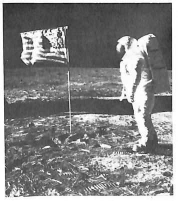
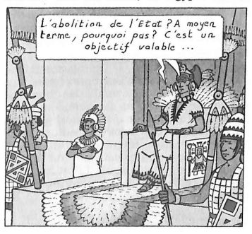
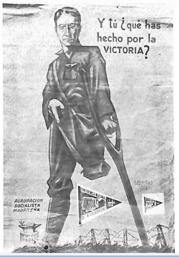
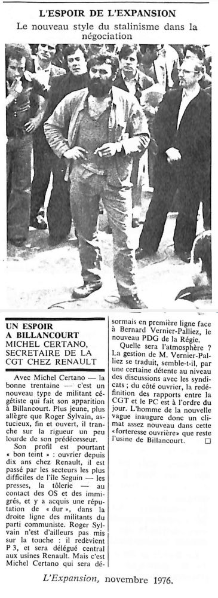
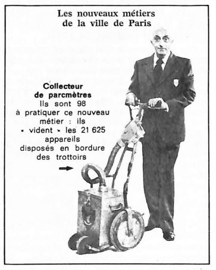
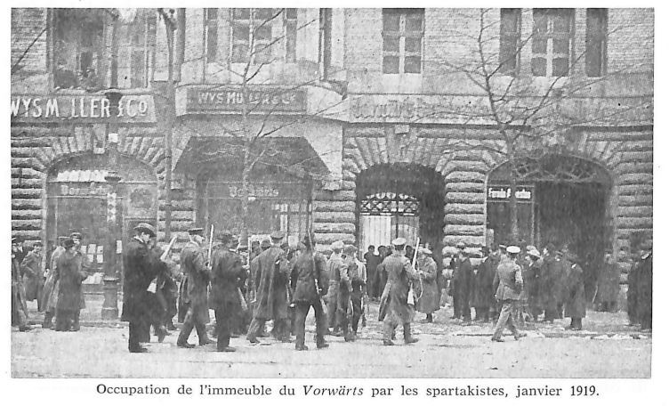

La question de l'État
I.
L’État occupe de plus en plus la totalité de notre vie. Les États semblent supporter le monde, et chaque État constitué créer en quelque sorte la société. Produit de la société, il apparaît comme son garant, voire son fondateur. Assurant sa cohésion, il semble lui donner vie.
N’importe quel État actuel a infiniment plus de pouvoir que les despotes d’autrefois. Le progrès de la “démocratie” va de pair avec un renforcement de l’État, et le libéralisme a engendré son contraire.
La socialisation économique et technique du monde lui permet de déverser partout sa propagande au travers des multiples journaux, radios et télévisions, et d’envoyer en peu de temps, sa police où il veut grâce aux communications rapides et à la technologie moderne.

Cette omniprésence est devenue universelle avec la conquête de la planète par le capital. Pas un territoire au monde qui ne relève d’un État. La “décolonisation” les a multipliés. On peut même voir des États là où il n’y a pas de nation. A l’intérieur de frontières tirées au cordeau sur des milliers de kilomètres, parce qu’elles n’expriment qu’un partage effectué en commun par les puissances impérialistes et les bourgeoisies locales, les structures étatiques offrent le corps nu de l’État, dépouillé de tous les attributs qui lui ont donné vie en Occident. Il se réduit ici à sa plus simple expression un appareil administratif, appuyé sur une armée, renforcé par un système scolaire.
Même s’il est violemment dénoncé comme parasite, l’État est considéré comme indispensable à la survie des sociétés. Ce serait un mal nécessaire, dépassable seulement dans l’avenir lointain de la science-fiction politique. Des hommes de lettres ont pu aller discuter de son dépérissement avec V. Giscard d’Estaing, et le chef de l’État de constater, lui aussi, que la dissolution de l’État restait un objectif valable.
Dans la pensée la plus extrême, l’abolition de l’État n’a qu’un sens étroitement politique. De transformation sociale, il n’en est pas question.
II.
La question de la destruction de l’État est centrale pour la révolution à venir, et donc déjà pour sa théorie présente. Cette question a été et continue d’être un révélateur des différentes positions face à la révolution. C’est à propos de l’État que s’est faite et continue à se faire la ligne de partage.
Pour le sens commun, l’État est considéré comme une réalité indépassable: s’il n’est pas éternel, alors peut-être disparaîtra-t-il avec le développement du socialisme. Paradoxalement, la construction de ce socialisme est essentiellement confiée à l’ancien État rénové ou à un nouvel État ouvrier. Le socialisme finit ainsi par légitimer le maintien et même le renforcement de l’État.
L’État n’est pas le nécessaire produit de la complexité des conditions de vie et des techniques modernes. Le communisme n’est pas de si faible constitution - un stade d’angélisme - que ses principes ne puissent s’appliquer qu’une fois les conflits et les contradictions éliminés. Le communisme n’a pas besoin d’un État, même ouvrier ou provisoire, pour l’emporter. Il ne peut mener sa guerre que selon ses propres principes, et c’est de là qu’il tirera sa force et sa supériorité; c’est en changeant le combat de terrain qu’il rendra l’État vulnérable.
Il lui faudra être efficace, organiser, centraliser et réprimer, mais il le fera à sa façon. L’État, par nature, unifie et administre de l’extérieur. Le communisme dissout les séparations et fonde directement l’unité et la communauté autour des besoins communs.
Ce sont les conditions de vie et le développement des techniques modernes comme les télécommunications et l’informatique qui, loin d’assurer sa pérénité, même s’il les utilise et les façonne suivant ses besoins, assurent les conditions de son dépassement. Les techniques modernes sont sabotables, détournables et transformables par le mouvement anti-étatique.
III.
Le rapport de base de toute l’économie féodale, l’octroi de terre contre la prestation de certains services et redevances personnels, offrait déjà, sous sa forme originelle la plus simple, matières à litige, surtout là où, dans les rapports des seigneurs avec leur suzerain, beaucoup avaient intérêt à chercher des querelles.
D’où un jeu séculaire et alterné d’attraction des vassaux vers le centre royal, qui pouvait seulles protéger contre l’extérieur et entre eux, et de répulsion loin de ce centre - en quoi se change inéluctablement et constamment cette attraction -; d’où cette lutte ininterrompue entre royauté et vassaux dont le fracas couvrait tout le reste.
Dans ce chaos général, la royauté était l’élément de progrès. Elle représentait l’ordre dans le désordre, la nation en formation en face de l’émiettement en principautés rivales. Tous les éléments révolutionnaires qui se constituaient sous la surface de la féodalité en étaient tout aussi réduits à s’appuyer sur la royauté que celle-ci en était réduite à s’appuyer sur eux: l’alliance entre royauté et bourgeoisie date du Xème siècle.
Les nécessités de la centralisation, pour le roi, d’un monde qui ne connaisse pas les conditions féodales d’emploi désordonné de la force, de la rapine et du pillage, pour la bourgeoisie naissante, leur donnait en effet une base d’accords mutuels. La redécouverte du droit romain, par exemple, arme puissante de la royauté, était à un tel point l’expression juridique classique des conflits et des conditions de vie d’une société où règne la pure propriété privée, que toutes les législations créées par la bourgeoisie après sa prise du pouvoir politique n’ont pu y apporter aucune amélioration essentielle.
C’est le développement du commerce des villes qui mina la féodalité, le rôle accru de l’argent, le remplacement des redevances et services par l’équivalent général, mais il donna également à la royauté un pouvoir inconnu d’elle jusqu’alors.
La noblesse féodale n’avait pu se maintenir, malgré son opposition au développement de l’État national, que grâce à son monopole du maniement des armes. Depuis longtemps, les rois s’étaient bien efforcés de développer une armée qui leur soit propre et de s’émanciper de l’armée féodale; mais, pour s’émanciper de l’armée féodale, il fallait pouvoir instituer de nouveaux rapports de sujétion et disposer de nouvelles couches sociales “militaires”.
C’est le développement de l’économie bourgeoise qui permit de résoudre ce problème, d’abord en permettant aux souverains de recourir au service de troupes enrôlées ou louées, ensuite en créant les conditions de base d’une infanterie aguerrie, surgissant d’un milieu social opposé à la noblesse. Dans les triomphes des confédérés suisses sur les Autrichiens et les Bourguignons, au XIVème siècle, l’armée féodale avait succombé devant les débuts de l’armée moderne, le chevalier devant le bourgeois et le paysan libre.
C’étaient aux innovations technologiques qu’il convenait de sceller la fin du règne de la noblesse féodale: la poudre battit en brèche les remparts de ses châteaux et l’imprimerie ses particularismes locaux. Après avoir été copieusement pillée et malmenée par son alliée, la monarchie, la bourgeoisie allait préparer sa revanche et créer des structures politiques à l’image de son économie.
IV.
L’ancienne société reposait sur des rapports personnels, dans l’esclavage, le servage ou la propriété foncière. L’autorité du patricien ou du seigneur était investie de la grâce divine. Les possédants recevaient du ciel un don particulier qui justifiait leur rang et leur fonction.
Impitoyable, la bourgeoisie a déchiré les liens multicolores qui attachaient l’homme à son supérieur naturel, pour ne laisser subsister d’autre lien entre l’homme et l’homme que l’intérêt, le froid “paiement comptant”.
Le rapport de l’individu à la totalité de la société, auparavant pris en charge par la croyance en Dieu comme principe et régulateur suprême, a trouvé son expression profane: ce n’est plus à un homme que l’on attribue des qualités supranaturelles, mais à la société dans son ensemble et à son économie, qui possèderaient une vertu et une nature autonomes, distinctes de celles des rapports sociaux et de ceux qui les mettent en œuvre.
Pas plus maître de son histoire que dans la vieille société, prenant en charge une activité qui lui échoie de par une division et une répartition générales sur lesquelles il n’a aucune prise, l’individu voit son action se transformer en puissance étrangère qui s’oppose à lui et l’asservit. La puissance sociale - la force productive décuplée qu’a créée la coopération des hommes entre eux - ne leur apparaît pas comme leur propre puissance conjuguée, mais comme quelque chose de monstrueux et d’écrasant, capable de les détruire à tout moment.
L’on s’étonne de ce que les hommes aient cru en des dieux comme régulateurs de leur existence: mais les hommes modernes agissent et pensent comme si la société était faite d’autre chose que d’eux-mêmes. La société s’est autonomisée par rapport au citoyen, et cette autonomie s’est cristallisée dans l’État. Par un renversement idéologique, l’État apparaît comme créateur et dispensateur de richesses prises à une société incapable de les utiliser par elle-même. Il paraît alors aussi invraisemblable de pouvoir agir sur le cours des choses que lorsque c’était Dieu, aux desseins impénétrables, qui se chargeait dela conduite des affaires terrestres.
V.
Le problème de la révolution bourgeoise a toujours été de créer un contrat social, car elle construit moins une économie nouvelle, déjà existante, qu’un État lui permettant de se développer. Elle institue une organisation sociale réunissant les individus, atomisés par la dissolution des cadres anciens: ordres, corporations, domaines et solidarités locales, et par son foutu mode de production dominé par la concurrence et la compétition individuelles.
Théoricien de la révolution bourgeoise anglaise du XVIIème siècle, Hobbes considère qu’individualisme et compétition font partie des traits fondamentaux de la psychologie humaine: la soumission absolue est alors de l’intérêt de chaque individu. Mais c’est une simple rationalisation de la compétition bourgeoise naissante: «Le désir que Hobbes donne d’abord aux hommes de se subjuguer les uns les autres n’est pas raisonnable. L’idée de l’empire et de la domination est si composée, et dépend de tant d’autres idées, que ce ne serait pas celle qu’il aurait d’abord1.»
L’organisation politique est donc définie par un contrat; les hommes doivent renoncer à leur force sociale au profit de l’État : «Les bonnes institutions sociales sont celles qui savent le mieux dénaturer l’homme, lui ôter son existence absolue pour lui en donner une relative et transporter le moi dans l’unité commune; en sorte que chaque particulier ne se croie plus un, mais partie de l’unité, et ne soit plus sensible que dans le tout2.»
Ce que souhaitait Rousseau, Tocqueville, un siècle après, en craint les effets: «Le despotisme me paraît particulièrement à redouter dans les âges démocratiques […]. Dans les siècles d’égalité, chaque individu est naturellement isolé […]. On le met aisément à part, et on le foule aisément aux pieds3.». Les monarchistes eux-mêmes affirmaient que la perte d’un ordre hiérarchique provoquerait un isolement des individus tel que seul un État implacable pourrait unir la société. Burke, philosophe contre-révolutionnaire anglais, dit de la France en 1795: «L’État est suprême. Tout est subordonné à la production de la force.». Les contre-révolutionnaires se trompaient pourtant en croyant que le despotisme viencrait sous les traits de dictateurs, alors qu’il a surtout pris un visage impersonnel.
VI.
L’État et les sociétés de classe sont apparus en même temps. Mais si l’État est un instrument de domination de classe, il est plus que cela. La division de la société en classes s’accompagne et provient d’une division, d’une scission dans l’activité humaine. L’État surgit quand l’activité des hommes pose un problème, parce qu’elle n’est plus unifiée. Le problème du pouvoir apparaît quand les hommes perdent le pouvoir de se transformer eux-mêmes ainsi que leur environnement, et sont contraints d’agir dans un autre but que le contenu de leur activité. L’État est l’organisation rendue indispensable par le travail aliéné.
Dès son origine, l’État n’est pas seulement l’instrument d’une partie de la société sur l’autre, mais aussi le mode même d’unification et d’organisation de la classe dominante. L’État grec ne conciliait pas seulement les intérêts de classe au profit de la classe dominante: il préservait un certain équilibre au sein de la classe possédante rongée et divisée par la richesse; l’histoire des cités-États grecques est un long et vain effort pour limiter la richesse marchande et conserver l’unité précaire des citoyens - possédants divisés en riches et pauvres.
L’État moderne assure d’autant plus cette fonction de médiateur que le capitalisme isole les individus et les prive des moyens de vivre. Chaque individu est séparé de son activité et de l’objet de son activité, du monde qui l’entoure et des individus avec lesquels il est en concurrence. La raison et la force de l’État moderne est d’unifier cette séparation.
Rapports et actes les plus simples deviennent soit des relations marchandes, soit des actes administratifs. Le pire n’est pas que l’État interdise et contraigne, c’est qu’il soit toujours là pour remplir des fonctions élémentaires dont le capitalisme avancé fait un problème. Au-dessus des hommes se dresse l’État : «Il travaille volontiers à leur bonheur; mais il veut en être l’unique agent et le seul arbitre; il pourvoit à leur sécurité, prévoit et assure leurs besoins, facilite leurs plaisirs, conduit leurs principales affaires, dirige leur industrie, règle leurs successions, divise leurs héritages; que ne peut-il leur ôter entièrement le trouble de penser et la peine de vivre?3».
Il n’opprime que parce qu’il en acquiert ainsi la puissance et que toute une série d’actes naturels sont devenus “service public” comme se chauffer, s’éclairer, ou se donner un coup de main en cas d’incendie. Le quadrillage social n’est rendu indispensable que par l’incapacité des hommes à satisfaire leurs besoins vitaux.
L’école est parmi les éléments constitutifs de ce système: seul l’État moderne la développe au point étonnant qu’elle atteint aujourd’hui. Apprendre est devenu un problème gigantesque qui suppose un énorme appareil et une bureaucratie, parce que le souci de produire passe avant l’intérêt pour le processus de production, le résultat avant l’activité : apprendre et faire sont devenus deux moments distincts que l’école ne peut réunifier. Dans les pays “sous-développés”, en apprenant à désapprendre le travail agricole, le système scolaire pose les bases d’une société capitaliste: destruction des cultures vivrières, création de prolétaires forcés de se salarier. Le capital déracine l’homme et fait de lui un infirme perdu sans le soutien de l’État.
VII.
L’État moderne n’est pas qu’un médiateur et ne se trouve pas à l’extérieur du mouvement du capital, il en est devenu un élément à part entière. . L’État n’a pas attenclu le capital pour jouer un rôle économique, comme l’attestent l’organisation de la production agricole ou la mise en œuvre de grands travaux chez les Incas, en Egypte ou en Chine. Mais il restait avant tout un administrateur, souvent sous une forme fragile: les Incas, tribu conquérante, devenaient la “classe dominante” de tribus soumises, constituant l’État sur une base ethnique, à la merci d’une défaite militaire ou de crises internes (guerres de succession). Même la Cité grecque, préfigurant par bien des aspeets l’État moderne, en particulier par la dualité institution centrale/démocratie, était surtout un organe politique.

Le capital n’a pas été d’abord libéral, puis monopoliste et étatique. Le libre échange n’est qu’une parenthèse de quelques dizaines d’années (généralement située entre 1840 et 1870): dès la fin du XIXème siècle, l’Angleterre elle-même préfère le “juste échange” au libre échange. Mais, même dans sa phase libérale, l’État joue un rôle clé. La forte avance prise par l’Angleterre sur la France dans le domaine de la production industrielle est due aussi à l’État “bourgeois”, quoique monarchiste, qu’a pu se donner son capital, alors que la France attend 1830 et, plus encore, le Second Empire pour s’industrialiser.
Le capital n’a pas plus vécu une période libérale pure, comme si les entrepreneurs avaient agi entièrement à leur gré et de leur propre initiative, qu’il ne connaît aujourd’hui de période “capitaliste d’État”, comme si l’État contrôlait effectivement le capital et que le capitalisme d’État à la russe soit une forme plus avancée préfigurant l’avenir. Le libéralisme a toujours coexisté avec l’intervention étatique, et les pays les plus bureaucratiques sont probablement ceux qui maîtrisent le moins leur processus économique.
Dans les pays capitalistes plus jeunes, l’État pallie la carence de la bourgeoisie. Le capital s’est accumulé là où existait une forte tradition étatique : Allemagne bismarkienne, Japon de l’ère Meiji, Russie d’avant 1917; dans ces trois pays, la bourgeoisie, socialement faible, est tenue à l’écart du pouvoir politique, mais l’État développe une économie capitaliste.
VIII.
L’État est là pour unifier une société qui ne l’est pas. Il est normal qu’à notre époque sa fonction essentielle soit économique, puisque la production économique, moteur du monde moderne, est aujourd’hui la force sociale à contrôler et unifier en priorité. L’État est devenu le garant de l’accumulation. Prélevant en France plus de 40% de la “production intérieure brute” (dont, en 1975, 24 % en impôts et 17 % en cotisations sociales), il redistribue ces sommes pour harmoniser les productions, augmenter la rentabilité et effectuer les transferts de revenu nécessaires à une relative paix sociale.
Sans sa fonction sociale devenue indispensable, on réduit l’État à son aspect politique de répression ou à celui de régulateur de l’économie. Comment expliquer alors qu’il soit accepté malgré son rôle oppressif?
L’État aide aujourd’hui les catégories sociales autrefois prises en charge par la société: l’application pure et simple de la logique marchande et salariale laisserait mourir de faim bon nombre de vieillards, malades, et autres “défavorisés”.
Certains peuvent dire que l’État c’est l’armée et l’impôt, l’un entretenant l’autre. C’est oublier qu’il ne se contente plus de prélever de l’argent, mais qu’il en donne, profitant du pouvoir absolu de l’argent pour se rendre lui-même indispensable.
IX.
Contrairement à la mythologie de gauche, les formes politiques bourgeoises démocratique et dictatoriale se succèdent et s’engendrent mutuellement, sans intervention prolétarienne directe. Les dictatures ne viennent pas au pouvoir après avoir battu les ouvriers au cours de combats de rue: ce sont les démocrates et le mouvement ouvrier traditionnel qui défont les ouvriers révolutionnaires, par les armes et la confusion électorale (telle l’Allemagne en 1918-1921).
Ceux qui font de la contre-révolution militaire l’épouvantail, la forme unique de la contre-révolution, devront méditer ce fait que l’on ne défait pas le prolétariat par l’action militaire (échecs de l’action de Kornilov et du putsch de Kapp), mais qu’elle peut, au contraire, accélérer le processus révolutionnaire. C’est quand le prolétariat est déjà défait socialement que la contre-révolution est militaire et violente.
Le fascisme italien a affronté les ouvriers agricoles et industriels, mais il n’a triomphé qu’après que les ouvriers aient été divisés par les votes et les tentatives de conciliation socialistes, ainsi que par l’intervention matérielle de l’État démocratique.
Les dictatures ne tombent pas sous les coups des masses enfin révoltées contre la tyrannie. Elles cèdent elles-mêmes à nouveau la place à la démocratie. En 1943, en Italie, c’est le régime lui-même qui retire ses pouvoirs au “dictateur” Mussolini, décide un retour progressif à la démocratie, prend contact à cet effet avec les partis d’opposition jusque-là honnis et traqués, et ouvre des négociations avec les Alliés pour changer de camp. En 1945, en Allemagne, c’est la défaite militaire qui fait tomber le régime, que les Alliés remplacent par des dirigeants à eux, à l’Ouest comme à l’Est, avant que des dirigeants “nationaux” ne reprennent les rênes.
En 1975, en Grèce, la crise de Chypre et la pression américaine obligent les colonels à passer la main aux démocrates - eux-mêmes assez à droite d’ailleurs -, qui attendaient leur tour en exil, et sont venus naturellement prendre leur place. Au Portugal, une partie de l’armée a compris que l’ancienne formule politique ne tenait plus, et pris les devants d’un changement de régime pour qu’il se fasse en douceur, ce qui a finalement réussi. En Espagne aussi, le capital prend l’initiative d’une démocratisation progressive et contrôlée.
Il y a en effet une logique aussi rigoureuse dans les “suicides des démocraties” que dans les “retours” ultérieurs à la démocratie. Il ne s’agit que d’une répartition des tâches, et d’une concentration dans le temps de la violence nécessaire pour liquider les oppositions qui entravent la bonne marche du système.
X.
Si le pluralisme démocratique, le parlementarisme, les partis de masse et les syndicats sont très efficaces pour contenir une poussée révolutionnaire, ils peuvent aussi créer une situation de confusion, non révolutionnaire, mais qui empêche la remise en ordre du capital.
La dictature est alors nécessaire pour discipliner la bourgeoisie, réduire la classe moyenne, et éliminer les mouvements revendicatifs élémentaires.
Le fascisme fut une illustration de cette centralisation forcée dans des pays - Italie et Allemagne - où l’unité politique était fragile, la question nationale ayant été mal réglée, et le mouvement ouvrier réformiste ayant pris trop d’importance à la suite des sursauts révolutionnaires qu’il avait endigués. Il a été une forme spécifique de la venue du capital à une domination totale sur la société, dans des pays politiquement fragiles.
L’antifascisme veut pousser le capital à devenir ou rester démocratique, l’empêcher de se faire dictature. Mais les formes politiques du capital découlent de ses nécessités du moment: les partis ouvriers, les masses ou les libéraux n’y peuvent rien. Il n’existe pas de “choix” auquel les ouvriers pourraient être conviés ou s’inviter de force.
Dans certaines phases, le capital ne peut plus rester pluraliste, il doit centraliser par la force les composants de la société, les faire converger sous une direction unique. L’opposition entre les deux méthodes est d’autant plus limitée dans le capitalisme développé que l’État moderne cumule les deux tendances. Mais il n’est pas exclu qu’à l’avenir des conflits capitalistes, entre des formes avancées et retardataires du capital, se combinent à l’étouffement de mouvements révolutionnaires pour produire des guerres civiles où le capital soit présent dans les deux camps, chaque camp représentant une solution capitaliste, comme après juillet 1936 en Espagne.
Le secret du passage de la démocratie au fascisme, et vice versa, est donné par cette déclaration récente de S. Carillo, leader du P.C.E., qui affirme vouloir, «changer le régime pour sauver l’État». C’est exactement ce que font la venue au pouvoir des dictateurs et le retour des démocrate à la tête de l’État, présenté chaque fois comme une «victoire de la classe ouvrière».
Que les prolétaires puissent profiter de ces évolutions pour se manifester sur leur terrain, ou simplement mettre en difficulté la rationalisation et la rentabilité du capital par leurs revendications, comme ils l’ont fait au Portugal n’est pas négligeable, mais ils n’assurent l’avenir révolutionnaire que dans la mesure où justement, ils se situent au-delà de l’opposition démocratie/dictature. Le capital n’est jamais aussi fort que lorsqu’il réussit à mobiliser les masses à son profit, en leur faisant croire qu’elles combattent pour elles-mêmes.

XI.
Tous les régimes, sur tous les continents organisent, à plus ou moins long terme un simulacre de vie parlementaire.
Pourfendeur du «parlementarisme pourri», Hitler maintint jusqu’à la guerre la fiction d’un Reichstag souverain. En 1939, il lui fit voter la déclaration de guerre non sans dérision d’ailleurs : comme il manquait trop de députés, on fit occuper les sièges vacants par des fonctionnaires du parti.
Staline, puis les “démoeraties populaires”, ont tenu à reproduire les formes électorales, vidées de tout sens: le parti unique n’est pas seul en lice, il y a des candidats “sans parti” et, dans les “démocraties populaires”, des partis satellites distincts du P.C., tout cela pour donner des résultats positifs à 98%.
Le Brésil a dû revenir à un minimum de vie politique, avec deux partis, l’un gouvernemental, l’autre d’opposition modérée. Au Sénégal, l’État autorise maintenant les partis, mais à condition qu’il les différencie et leur donne lui-même leurs noms. Même le Cambodge actuel, aussi peu soucieux de l’opinion internationale que prodigue du sang de ses citoyens, prépare des élections: certes, l’armée aura une place prépondérante au sein de l’Assemblée, mais il est significatif que l’on éprouve le besoin de légitimer son hégémonie par le vote.
Bien des idées liées au thème général du devoir électoral appartiennent, à proprement parler, à la forme totalitaire et paraissent déplacées dans le vocabulaire de la démocratie libérale.
Si les pays de “dictature” eux-mêmes ressentent la nécessité de la démocratie, c’est qu’elle correspond à un besoin de l’État, comme le montrent les récentes élections espagnoles. La force et le besoin du capital n’est pas seulement de se trouver des chefs ou une majorité, mais aussi une opposition - de se donner un lieu où mettre en scène ses propres incertitudes. La “vie politique” dans son ensemble se module sur cette nécessité: avant 1939, la Grande-Bretagne et les États-Unis n’étaient guère que les seuls pays à connaître la “bipolarisation” - l’alternance de deux partis dont l’action est quasi identique, mais censés représenter des solu- tions différentes. Aujourd’hui, la R.F.A., l’Autriche et la Suède fonctionnent de la même façon; elle donne des gouvernements plus efficaces que le jeu centriste que l’on peut encore voir en Italie. Les dictatures deviennent aussi une entrave au développement des forces productives quand elles s’appuient - comme Caetano le faisait au Portugal - sur des couches archaïques (propriétaires fonciers).
C’est au moment où la vie politique bourgeoise classique est dépouillée de son sens, précisément par l’unification du capital, sa domination totale et l’avènement de l’État moderne, que les formes politiques les plus désuètes se répandent sur toute la surface du globe.
Comme la concurrence des capitaux, la concurrence politique est dans la nature du capital, bien que le réseau des monopoles et des États enserre aujourd’hui la vie politique comme la vie économique.
XII.
Les débats à l’intérieur des partis de gauche, et entre eux, reprennent les polémiques du début du siècle. La social-démocratie allemande s’était construite en partie en réaction au lassalisme, qui avait échangé l’appui des ouvriers à Bismark contre une amélioration de leur sort.
Aussitôt légalisé, le parti socialiste adopte la même attitude: Bernstein croit à une évolution progressive de l’État, qui s’ouvrirait à la discussion démocratique et accorderait de plus en plus de droits et de réformes.
Contre lui, Kautsky affirme bien que l’État est un État de classe et ne peut être réformé de l’intérieur, mais il ne fait lui-même aucune critique de l’État, car il propose à la place de l’État existant un autre État: le même, mais animé par les ouvriers et pour leurs propres intérêts. Il parle même de renouveau du parlementarisme.
Voulant “restaurer” en 1917 la pensée de Marx, Lénine dissocie la révolution en communisation (qu’il laisse de côté en la réduisant à l’électrification) et création d’un nouvel organe d’administration.
Les positions de Bernstein, de Kautsky et de Lénine sont le modèle de toutes les variantes que l’on a vues et voit encore dans les partis staliniens, socialistes et les groupes gauchistes, comme dans leurs débats; elles fusionnent aujourd’hui au point qu’il devient impossible de les démêler.
Pour la gauche, l’État est toujours préférable au capital privé, car elle peut plus facilement influencer les rouages étatiques que ceux de l’économie privée. Ainsi, elle dénoncera la “mainmise du patronat” sur tel ou tel secteur, en exigeant que l’État en soit seul responsable. Elle ne reproche à l’État que de l’exclure. Le stalinien Elleinstein, par exemple, reconnaît le pouvoir croissant de l’État, mais en conclut qu’il faut le démocratiser4. Puisque l’État a pénétré toute la société, et donc que les luttes sociales se déroulent aussi en son sein, il en déduit que l’État n’est plus un appareil à abattre, mais un lieu à occuper. Ce n’est plus “l’État instrument de classe”, mais un espace social où intervenir à tout prix.
XIII.
Depuis ses débuts, c’est-à-dire depuis le milieu du XIXème siècle, le mouvement ouvrier officiel veut à la fois se faire reconnaître par l’État et s’intégrer. Dépourvue de base économique - au contraire de la bourgeoisie -, la bureaucratie “ouvrière” ne possède pas d’autre moyen de se promouvoir et d’accéder au contrôle des moyens de production que d’entrer dans l’État et d’accentuer l’intervention étatique. Même dans les pays où le mouvement ouvrier est une puissance financière, comme en Allemagne - où les syndicats possèdent, entre autres, la quatrième banque du pays -, il s’efforce toujours de pénétrer l’État pour disposer d’un contrôle sur le capital.

Cette tendance est renforcée par la poussée des couches de petits et moyens fonctionnaires (enseignants en tête), qui elles aussi ne possèdent pas de capital, et n’ont d’autre espoir d’une mainmise sur lui que par le contrôle économique de l’État. Ces couches jouent un rôle considérable dans le vieux mouvement ouvrier, en le parasitant. C’est la “nouvelle gauche”.
Les deux tendances de la bureaucratie ouvrière et des fonctionnaires se conjuguent pour promouvoir le mouvement ouvrier à l’intérieur de l’État et, quand c’est possible, à sa tête. Il n’est pas étonnant que les partis socialistes et staliniens n’aient jamais fait une critique radicale de l’État. L’habitude, même progressive, de la tutelle complète, détruit, en fin de compte, toute initiative; on attend tout de l’État, puis, dès le premier déplacement de force, l’on exige tout de lui, le rendant responsable de tout. Il devient alors l’État-à-tout-faire.
Ce que le mouvement ouvrier réclame de l’État, c’est en quelque sorte de n’être plus lui-même : il le veut paternel et conciliant, impartial, donc indépendant de la division en classes de la société, juste, c’est-à-dire hors de la réalité de l’histoire des luttes de classes, neutre, c’est-à-dire patrimoine commun aux prolétaires et aux bourgeois; il veut qu’il soit l’éducateur du peuple.
Le mouvement ouvrier a tout attendu de l’État et est resté le meilleur défenseur de l’État providence et donc, qu’on le veuille ou non, de l’État fort. Paradoxalement, excepté l’anarchisme resté très marginal, il a abandonné la critique de l’État à la fraction anti-étatique de la droite. Le monarchisme s’est acharné à dénoncer l’oppression de l’État républicain, lui reprochant de nier la vie des récrions et des collectivités, mais en n’envisageant de salut que par la venue d’un autre État puissant qui remettrait de l’ordre et nous délivrerait de la tyrannie de la république…
XIV.
Assimilant le capitalisme à un processus de “fascisation” toujours plus menaçant et le “socialisme” à une libéralisation démocratique, la gauche glorifie la démocratie, passe à côté de la critique de l’État, et déplace le problème social au niveau purement politique. La question des rapports sociaux, de la nature de l’activité productive, du contenu de la vie, se dilue dans la revendication de droits toujours plus nombreux: il faudrait pouvoir faire ceci, cela… Mais qui dit droit dit une force qui les accorde, les limite, et en sanctionne le non-respect. L’idée du droit implique celle du devoir: c’est donc aussi bien une multiplication des devoirs qui est revendiquée.
Pour que nous soyons libres, l’État doit intervenir de plus en plus dans tous les aspects de la vie; totalitarisme avoué et mouvement démocratique se font l’un et l’autre les champions de l’État, le premier pour qu’il soit fort, le second pour qu’il nous protège, ce qui revient au même: «Nous ne pouvons plus, hélas! croire qu’en brisant Hitler et son régime nous frappons le mal à sa source. Dans le même temps, nous formons des plans pour l’après-guerre qui rendraient l’État responsable de tous les sorts individuels et qui, nécessairement, mettraient aux mains du Pouvoir des moyens adéquats à l’immensité de sa tâche5.»
C’est l’ensemble de la société que le capital veut entraîner dans la démocratie totalitaire d’une société illusoirement uniforme, chacun étant son propre représentant, et devant se conformer à son intérêt particulier, lui-même conforme à l’intérêt général.
Entre l’individu atomisé et la société représentée par l’État, existe une foule de regroupements intermédiaires - famille, entreprise, syndicat, parti, collectivité locale, liens de voisinage, communautés de consommation -, le capitalisme en dégrade certains - telle la famille - en en développant d’autres. La dictature les réorganise de force et les contrôle directement. La démocratie leur fait jouer leur propre jeu, au profit de la société capitaliste tout entière.
Le principe de la démocratie est de pouvoir laisser leur initiative aux individus et groupes, sachant que, placés dans un cadre capitaliste, c’est-à-dire où la logique de la valeur et du salariat s’impose d’elle-même à eux sans contrainte externe, ils agiront dans un sens capitaliste.
XV.
Le programme de la gauche prévoit de compenser la force de l’État par des organisations de masse où les individus se retrouveraient sur la base de leur travail, de leur domicile, de leurs intérêts de consommateur et d’usager… La “participation” de De Gaulle en 1968 apparaît bien mesquine devant la vague de fond démocratique et le lyrisme autogestionnaire : «On voit aussi des jeunes construire leurs Maisons de jeunes, des travailleurs aménager leurs locaux de travail, des adultes réaliser des maisons pour vieillards, des consommateurs concevoir et organiser leur zone commerciale6.» Que chacun participe à la vie de la cité et de la nation, revendique, milite pour accroître les compétences de son organisation: voilà ce qu’est changer la vie !
C’est là que la gauche est totalitaire, par cette participation généralisée, plus que par des camps à la russe ou autre goulasch du même goût. La dictature du capital n’est pas le fait du F.B.L ou du K.G.B. Elle est dans la tentative de donner à chacun un pouvoir illusoire, de le faire participer à la prise de décisions qui, de toute façon, sont prises d’avance, parce qu’inscrites dans la logique du capital, si omniprésent dans les structures matérielles et les relations humaines qu’il a aussi pénétré les comportements et les esprits.
On donne la parole pour éviter une remise en cause réelle: c’est une libération du langage, substitut d’une émancipation réelle. Le capital sait si bien transformer les révoltes en discours. Car bien sûr tout ce merdier vit des aspirations à un bouleversement social: «L’explosion de mai 68 fut réaliste dans la recherche des moyens qui permettraient de réintroduire un jeu, une chaleur, une vie dans le fonctionnement des grandes organisations. Toutes, même le parti communiste, l’armée et l’Eglise catholique, ont subi ce contrecoup de mai, qui a troublé leur ronronnement régulier en leur ouvrant peut-être les voies d’une heureuse transformation7.» Le capital qui l’emporte encore vit de tout ce qui tend à le détruire: la révolution impuissante nourrit la contre-révolution.
Bien qu’il les suscite lui-même, le capital craint les formes dictatoriales, parce qu’il se prive alors de l’intervention active des hommes dans son fonctionnement. La dictature tend à rendre les salariés passifs, alors que la démocratie repose, en principe, sur leur capacité à réorganiser dynamiquement au moins une partie de leur activité.
XVI.
Si le capital dynamise ceux qui le servent, il les rend également passifs. Il vit de notre participation, et la freine au même moment. Il offre une activité, en la rendant impossible. Il exige une initiative des ouvriers comme des responsables, mais en la réprimant lorsqu’elle pparaît. Il suscite une action collective, en individualisant le travail, suppose une vision globale, mais parcellarise la production.
Parce qu’extérieur aux salariés - moyen de gagner sa vie dans une indifférence relative à ce que l’on fait -, le salariat nécessite une organisation elle-même extérieure au travail, mais qui n’est pas qu’un simple encadrement contre la fuite devant le travail: la bureaucratie doit aussi relier entre elles les parcelles de travail divisées par l’individualisation des tâches et des rémunérations. Un appareil externe est nécessaire pour recomposer l’unité de la production et en assurer l’exécution.
Cette séparation est encore aggravée en ce qui concerne l’État. La bureaucratie étatique organise ce qu’elle ne fait pas, et qui est fait par des corps étrangers à l’État (individus, entreprises, etc.). Pour s’organiser, elle doit connaître. Pour bien appliquer, elle doit surveiller.
L’État est un administrateur aussi prisonnier du capital social total que chaque P.D.G. l’est de celui de son entreprise. Dans ces conditions, toute participation effective des citoyens est encore plus impossible que dans l’entreprise : les salariés peuvent au moins aider l’entreprise à faire des profits et à les récompenser en avantages divers. Mais on n’a pas prise sur l’État, parce que lui-même échappe à toute réforme: il ne se réforme que dans la violence, à travers des crises graves.
L’État rationalise son budget avec les modèles économétriques les plus sophistiqués, il peut savoir exactement d’où vient et où va l’argent pour tous ses services: il ignore seulement quel effet aura cet argent dans le rapport réel de chaque service avec la société en général. L’État se complique lui-même progressivement la tâche. Pour gérer la société, il consacre une part énorme de son effort à se gérer lui-même. Il en vient à mettre le citoyen en situation de sujet passif, rendant difficile la moindre participation.
Dans la sphère politique, lieu de partage des pouvoirs, la vie politique, d’un côté, occuperait tant les forces sociales qu’elle disperserait les énergies par un pluralisme excessif. De l’autre, l’État éteindrait toute politique en concentrant autoritairement tous les pouvoirs. La plupart du temps, la politique domine autant que l’État, et la société s’unifie par son dynamisme propre, l’État n’intervenant que comme garant des limites d’un jeu à ne pas dépasser: mais l’équilibre reste précaire.
XVII.
Dans ce contexte, les projets de réforme rendant l’État de plus en plus social, le mettant au niveau des citoyens, ne peuvent rien régler. La revitalisation de la commune ne donnerait aucune vigueur à une démocratie directe impossible: elle réglerait au mieux quelques affaires mineures “devant la population”, le conseil municipal offrant lui-même le spectacle public de séances où il n’exercerait aucun pouvoir.
Ces réformes décentraliseraient l’État: ses moyens d’action seraient multipliés, ceux des citoyens dispersés. Le monde militant et politique ne demande pas mieux: tous ces gens-là veulent du pouvoir. Si l’on crée une commission de quartier, voilà un lieu de plus où faire de la présence ou de l’intervention.
La dictature de l’État tend à renforcer les procédures démocratiques et leur formalisme en prétendant leur donner toujours plus de réalité: la circulation marchande dans toute la société permet au capital d’exercer sa pression partout sans recourir en permanence à sa coercition centrale.
Totalitarisme bureaucratique et auto-gestion populaire coexistent dans le programme de la gauche française. Ce sont l’un et l’autre des rêves impossibles nés de l’incapacité de l’État tentaculaire à résoudre les problèmes du capital, et de sa tendance à s’alourdir lui-même en compliquant la vie quotidienne. Les tentations étatistes et autogestionnaires se nourrissent l’une de l’autre: au nom de l’ordre et de la justice, la première veut réunir les éléments de la société dont l’éparpillement provoque partout la complication et le gaspillage; au nom de la liberté, la seconde veut éviter ou supprimer le poids excessif de l’État par des contre-pouvoirs.
La coexistence de ces deux tendances reflète une crise de l’État (issue des difficultés du capital depuis le milieu des années soixante), qui entraîne une crise de la pensée politique, et divise la gauche comme la droite.
La crise de l’État à l’époque du fascisme a été surmontée par l’État tentaculaire démocratique régnant dans les pays capitalistes les plus avancés. Mais il existe aujourd’hui une autre crise, bien plus grave, car liée à l’existence du capital comme rapport social.
Il ne s’agit plus de liquider des classes moyennes ou des organisations ouvrières encombrantes, mais de résoudre la contradiction croissante entre le poids toujours plus important de l’État et son incapacité à résoudre les problèmes sociaux et économiques: au niveau social, il n’arrive pas à créer une nouvelle organisation de la vie purement capitaliste et marchande, débarrassée des vieilles mœurs et institutions. Dans l’économie, l’État, de par sa nature, bloque le libre développement des lois capitalistes. Il n’amortit les difficultés de rentabilité qu’en les aggravant autrement.

«Nous assistons à un curieux spectacle. Sous nos yeux se déroulent les préliminaires de la communauté8»: la question de l’apparition du communisme - de la destruction des entraves à son fonctionnement - se trouve ainsi posée; la situation irrésoluble créée par le capital exige la transformation de l’activité humaine et de toute la vie sociale.
XVIII.
L’anarchisme a le mérite d’avoir affirmé l’exigence de la destruction de l’État, mais l’incapacité anarchiste à fonder sa critique l’entraîne à une grande stérilité, sinon à des aberrations. Faisant reposer toute la société sur l’autorité concentrée dans l’État, vu comme cible à détruire en priorité, elle réduit le capital à l’État, et ne cherche pas plus que le marxisme vulgaire à définir la révolution communiste. L’“abolition de l’État” a pu ainsi devenir une formule magique recouvrant bien des confusions.
Bakounine avait raison de dire que la révolution ne se fait pas avec des décrets. Cela ne l’a pas empêché de signer “l’affiche rouge” de Lyon en 1870, décrétant l’abolition de l’État, et d’imaginer une “dictature secrète” qui dirigerait tout dans l’ombre. Niant la politique, les anarchistes voient le mal dans l’autorité: c’est encore l’abolition idéologique de l’État.
Ces Messieurs-là n’ont-ils done jamais vu une révolution? Une révolution est sans doute la chose la plus autoritaire qui soit, c’est l’acte par lequel une partie de la population impose sa volonté à l’autre, avec des canons par centaines et des fusils par milliers - qui sont des moyens par excellence autoritaires. Que le prolétariat n’ait pas d’intérêts particuliers ne change rien à l’affaire: les intérêts de l’humanité dans son ensemble ont à s’imposer à la bourgeoisie, classe dont les actes ne sont déterminés que par la logique abstraite du capitaL.
En Espagne, en 1936-39, les anarchistes en sont venus à identifier la révolution à une prise de pouvoir un peu partout sans attaque directe contre l’État. Ne voulant pas assurer les tâches administratives et répressives nécessaires, qui peuvent ne pas être étatiques si elles sont liées à la transformation de la société, ils ont laissé aux étatistes traditionnels le soin de s’en occuper, ou ont été contraints de se faire étatistes eux-mêmes: la participation de ministres anarchistes au gouvernement a montré ce que cela pouvait donner.
Paradoxalement, le courant le plus acharné contre l’État admet qu’en Espagne il y avait révolution en 1936, bien que les prolétaires aient laissé l’État intact. Pour l’anarchisme aussi, la révolution, c’est une grande démocratisation.
XIX.
Malgré sa critique de l’anarchisme sur le plan économique, où il tente de définir le communisme comme dépassement de la loi de la valeur, le conseillisme partage sa vision administrative et territoriale: «Les anarcho-syndicalistes reconnaissent la nécessité de planifier la vie économique et pensent que cela est irréalisable sans une centralisation comptable impliquant un recensement statistique des facteurs productifs et des besoins sociaux. Cependant, ils omettent de donner une base effective à cette nécessité statistique9.»
Le calcul conscient du temps de travail moyen nécessaire à la production des biens et le système démocratique des conseils ont tous deux pour but de gérer une zone, d’organiser des entreprises, des groupes associant des producteurs et s’associant entre eux.
Le conseillisme ne fait pas la critique de l’économie et de la politique en tant que telles, en tant qu’activités séparées: son point de départ reste la nécessité de produire et d’organiser cette production. Il n’en vient donc qu’à imaginer une totale décentralisation de la société en chaque conseil, ainsi qu’une valeur totalement intériorisée et calculée par chaque producteur et chaque entreprise; sa vision du communisme reste entachée des vieilles notions: Pannekoek s’est satisfait de la notion du conseil reposant sur le «regroupement naturel des travailleurs flans le processus de production».
Cette perspective a eu son mérite historique, mais on ne peut fonder aujourd’hui sur elle qu’une autogestion généralisée. Le conseillisme participe lui aussi à la vision du communisme comme grande organisation démocratique, à laquelle participe d’abord une minorité, même nombreuse (les ouvriers), puis, dans le “communisme achevé”, toute la société. Or, si la revendication de la prise en charge de la vie par chacun et par tous est une aspiration communiste, et peut susciter les actes les plus subversifs, elle se fige en restant sur le terrain de l’administration et de la décision. Le culte de la démocratie n’est pas anticommuniste parce que le communisme serait dictatorial, mais parce qu’il fait de la discussion un moment privilégié et un préalable, souvent inutile et paralysant.
Dans le conseillisme, le système des conseils est conçu comme une généralisation du parlementarisme. Le conseil est le parlement de la classe ouvrière. La ligne de partage entre réforme et révolution, à l’intérieur de cette perspective faussée, s’établit alors ainsi : les réformistes (staliniens, gauchistes, etc.) veulent transformer les organes de décision existants en les démocratisant petit à petit, en leur injectant des doses de plus en plus fortes de participation des masses; les conseillistes veulent en créer d’autres, instaurer immédiatement une “vraie” démocratie, une véritable structure de discussion et de décision.
Les uns veulent agir à l’intérieur, les autres à l’extérieur, mais l’erreur est identique: tous privilégient le moment de la décislon, et assimilent la révolution à la création d’un nouveau processus de décision. Les conseillistes veulent transférer ce processus des organes étatiques aux usines et aux quartiers. Parce qu’ils ne sortent pas de l’illusion politique, ils peuvent parler d’“abolition du salariat” et de suppression de la forme marchande, sans en faire plus qu’une formule jamais explicitée: ils ne comprennent pas la révolution comme processus engendrant une nouvelle activité.
XX.
La force et l’impasse du communisme utopique, depuis des millénaires, a été de vouloir créer artificiellement une communauté, faisant appel à un facteur extérieur pour réaliser une unité inexistante : Dieu, une morale stricte ou un plan impératif. Or le communisme est une résultante générale, et une communauté humaine est aujourd’hui possible qui soit basée sur ce qui est commun aux individus qui la composent: leurs besoins et leurs passions, leurs façons de les satisfaire, leurs modes d’existence. C’est pourquoi l’État peut disparaître, et une révolution mettre en place des structures de centralisation sans pour autant recréer un nouvel État.
Les actes de la bourgeoisie ne sont pas déterminés par la nature humaine de ses membres, mais par la logique abstraite du capital qui s’impose à elle, de même que les actes commerciaux du bourgeois individuel ne sont pas déterminés par ses désirs humams, mais par la logique du capital. Toute l’activité sociale est organisée sur le mode de sa concurrence insolidaire, mensongère et complicative: le système ne s’accommode que de la fausseté, unique voie de réussite en affaires sociales, comme en affaires galantes.
Seule l’idéologie étatique exalte encore la “vie sociale”, en sachant bien que seuls les bénéfices pécuniaires en constituent le véhicule: elle a beau jeu de reprocher aux gens leur manque d’esprit communautaire, quand il est créé par l’atomisation dont l’État est une des causes et le principal garant.
Au contraire, c’est pour réaliser leurs besoins humains que les prolétaires doivent détruire un mode de production dans lequel leurs capacités humaines ne sont qu’une marchandise. La dissolution de l’échange permet une recomposition de l’activité sur de tout autres bases.
Dans une division sociale du travail librement consentie et dominée par les membres de la société, chacun n’a pas une sphère d’activité exclusive, mais peut se perfectionner dans la branche qui lui plaît. La société réglemente la production générale, ce qui crée pour moi la possibilité de faire aujourd’hui telle chose, demain telle autre; de pêcher le matin, de pratiquer l’offset l’après-midi, la menuiserie le soir, de faire de la critique après le repas, selon mon bon plaisir, sans jamais, devenir pêcheur, imprimeur ou critique.
Le rapport à la nature en est lui-même transformé, et l’homme peut enfin sortir de l’état de rabougrissement de toutes ses facultés et autres pathologies industrielles inséparables de nos sociétés de classes. «Dans l’ordre civilisé où le travail est répugnant, où le peuple est trop pauvre pour participer à la consommation des mets précieux, et où le gastronome n’est point cultivateur, sa gourmandise manque de lien direct avec la nature; elle n’est que sensualité simple et ignoble, comme toutes celles qui n’atteignent pas au mécanisme composé, ou influence de production et consommation agissant sur le même individu10.»
L’État n’a plus aucune place dans un monde où la gourmandise est en mode composé.
XXI.
La révolution communiste n’est pas le heurt de deux armées, comme cela se voit généralement dans les conflits guerriers, et dont l’une défendrait le vieux monde et l’autre annoncerait le nouveau. Raisonner de cette façon, c’est réduire la révolution à un problème militaire: tout au plus à une guerre populaire.
La bourgeoisie, séparant le monde subjectif de l’État et de la politique d’avec le monde objectif de la société humaine et économique, peut croire que la guerre est seulement la continuation de la politique par d’autres moyens. La séparation apparaissant comme l’état naturel de cette société, et étant son mode de perception, elle saisit toutes choses par cette méthode policière. Mais concevoir la destruction de l’État comme lutte armée contre la police et les forces militaires, c’est prendre l’aspect particulier pour l’aspect général.
La guerre sociale n’est pas une guerre classique, mais le bouleversement de tous les aspects de la vie. Les fronts et tout le bordel logistique sont avant tout le déplacement d’hommes et de marchandises dans un espace politique où l’enjeu est le contrôle de territoires ou la prise du pouvoir.
Le communisme n’est pas le prolongement du capitalisme ni un programme à appliquer: c’est dans son mouvement de destruction qu’il engendre de nouveaux rapports. Le communisme n’est ni un état ni un idéal à atteindre, mais le dépassement des mouvements sociaux actuels.
Combattre l’État violemment par les armes viendra du besoin de transformer sa vie. C’est pourquoi un des problèmes essentiels de la révolution sera l’armement, comme moyen de satisfaire des besoins sociaux. Notre usage collectif de la violence nous aidera à nous débarrasser de nos manques. La violence révolutionnaire, contrairement à la violence politique, est un produit de besoins sociaux et joue elle-même le rôle d’un rapport social, modifiant les êtres et leurs relations.
La communauté humaine s’annonce déjà dans la violence communiste, et cela parce qu’elle ne concerne pas les spécialistes et n’est pas une spécialité. Les pistoléros modernes et autres terroristes, livrés à leurs seules forces, ne peuvent s’élever qu’à une conscience guévaristo-léniniste: la violence ne suffit pas à départager les révolutionnaires des tenants des partis de l’ordre.
Le communisme est d’abord activité. Le bouleversement de la société ne sera possible que si le prolétariat met en œuvre sa fonction sociale contre le capital, utilisant sa fonction dans l’économie comme arme dissolvant les rapports économiques. Il n’agira pas par le biais de la valeur, puisque, de par sa situation, il n’a aucun contrôle sur le capital comme somme de valeur: il n’a aucun moyen de se servir du capital financier et ne peut utiliser que le processus de travail dont il est le sujet. En bouleversant la société, le prolétariat fait ainsi sauter la nature double du capital : processus de travail et pro cessus de valorisation, sapant par là la base matérielle de l’État.

XXII.
Dans les révolutions antérieures, les révolutionnaires ne cernaient pas le lien entre action contre l’État et communisation de la société. On raisonne encore en léniniste ou symétriquement au léninisme: contre l’optique qui met au premier plan la socialisation de l’économie, la “gauche italienne”, par exemple, privilégie la question du pouvoir; la révolution serait d’abord politique, économique et sociale ensuite. En revanche, pour les conseillistes, il suffit que la gestion de l’économie soit bouleversée pour que la société le soit entièrement.
En Russie, en 1917, l’État ancien n’a même pas été détruit: il s’est pratiquement effondré de lui-même, incapable de satisfaire les revendications élémentaires des paysans et des soldats: la paix, la terre pour tous. Comme de multiples raisons - échec de la révolution en Europe, conceptions des bolchéviks, faiblesse du prolétariat - ont empêché une communisation de la société, l’organisation soviétique s’est trouvée devant la tâche d’administrer la Russie au nom d’un socialisme qu’elle ne réalisait pas, alors que le salariat se redéveloppait de plus belle. Cette forme n’a pu que se remplir assez vite d’un contenu capitaliste et reprendre le rôle d’agent de l’accumulation du capital déjà tenu par l’État tsariste. On en arriva alors à Cronstadt, à la politique réformiste de la IIIème Internationale, et à tout ce que réalise un État capitaliste, à l’intérieur et sur le plan international.
En Espagne, l’insurrection ouvrière mit en échec le putsch franquiste. Mais, bien que maîtres de la situation, les prolétaires ne s’en prennent pas à l’État légal (républicain). Bien plus, ils se mettent sous sa direction pour lutter contre Franco: la révolution se perd dans la guerre civile. Un lien direct relie la soumission à l’État républicain, fin juillet 1936, à la capitulation définitive des éléments les plus avancés, en mai 1937. Les prolétaires ne pouvaient qu’être battus dans une guerre dont la fonction première était la constitution d’un État légitime mieux capable de les intégrer. Les collectivisations? Elles ont géré, non sans un certain enthousiasme révolutionnaire, ee qui n’en restait pas moins du capitalisme. Les travailleurs ont pris tant bien que mal la place des patrons: leurs tendances communistes sont restées surtout velléitaires. Dans ces conditions, l’État républicain les élimina sans difficultés majeures.
Les mouvements russe et espagnol ont démontré qu’il ne pouvait y avoir de révolution sans destruction de l’État, et de destruction de l’État sans bouleversement communiste. En Russie comme en Espagne, la répression anti-ouvrière n’est qu’un effet secondaire de l’absence de communisation.
Le but de la révolution communiste n’est pas de fonder une structure sociale, un système d’autorité démocratique ou dictatorial, mais une activité différente. Elle ne met pas le pouvoir au premier plan, ni pour le rechercher ni pour le redouter. Elle seule résoud la “question du pouvoir”, parce que cette question n’est pour elle ni première ni essentielle. Elle la résoud parce qu’elle s’attaque à sa cause. Elle est appropriation de toutes les conditions matérielles de la vie: c’est en détruisant les liens de dépendance et d’isolement que le prolétariat détruira l’État.
La révolution communiste ne se fonde pas sur l’opposition gouvernés/gouvernants. Quand bien même les hommes s’autogouverneraient, le principe de séparation à la racine de l’État et de la politique subsisterait. Le communisme ne particularise pas ce principe, il le supprime.
XXIII.
L’État, qui vit de l’incapacité des hommes et des groupes à organiser une activité où ils se transforment eux-mêmes, est sapé dès que l’on commence à rendre inutile sa fonction de médiateur.
Cette destruction n’est pas automatique. L’État ne disparaîtra pas peu à peu, au fur: et à mesure que grandirait la sphère des activités non marchandes et non salariales. Ou plutôt cette sphère serait très fragile si elle laissait subsister l’État à côté d’elle, comme de nombreux gauchistes et écologistes voudraient le faire. L’une des tâches des révolutionnaires sera de poser alors clairement la question de l’État, tout en mettant en avant dès le début des mesures communistes tendant à saper sa force et à créer une situation irréversible.
Il est en effet exclu de lutter contre l’État en voulant d’abord détruire son pouvoir et seulement ensuite transformer la société, ou l’inverse. L’État ne s’effacera jamais. Ce formidable organe de répression en tout genre déchaînera tous ses moyens, directs et indirects, contre une révolution. Il devra être à la fois renversé par des chocs militaires et sapé par la communisation de la société, sans laquelle il serait inévitablement le plus fort.
Aucune vie nouvelle ne se mettra en marge de l’État, car, pour être en rupture avec le capitalisme, elle se heurtera forcément à l’État. Il n’y a pas d’un côté le problème de “vivre autrement” et de l’autre la “question de l’État”. La destruction de l’État, et principalement de sa force armée, n’est pas un moyen au service d’une fin extérieure à lui, La révolution est aussi une activité différente dans ses aspects militaires.
La révolution ne veut pas “le pouvoir”, mais elle a besoin de pouvoir réaliser ses mesures, sans lesquelles elle ne serait une fois de plus qu’idéologie, “la phrase débordant le contenu”. Elle n’a donc pas peur de mettre elle-même en place des responsables et des autorités: ceux-ci ne deviendraient un nouveau pouvoir que si les membres de cette société ne s’appropriaient pas leurs conditions d’existence. Toute autorité n’est pas étatique. La révolution communiste est une “dictature” dans la mesure où elle s’impose à une partie de la société, mais une dictature qui ne l’emporte qu’en poussant à la réalisation par tous de l’activité pratique humaine, et qui joue son sort là-dessus.
-
Montesquieu, De l’Esprit des lois. ↩
-
Rousseau, Du Contrat social. ↩
-
ElleinsteinLe Parti communiste ↩
-
B. cie Jouvenel, Du Pouvoir. ↩
-
M. Ragon, L’Architecte, le Prince et la Démocratie. ↩
-
M. Duverger, L’Autre côté des choses. ↩
-
Blanqui, «Le Communisme, avenir de la société», in La Critique sociale. ↩
-
Wagner, «L’Anarchisme et la révolution espagnole», in La Contre-révolution bureaucratique. ↩
-
Fourier, Théorie de l’Unité universelle. ↩